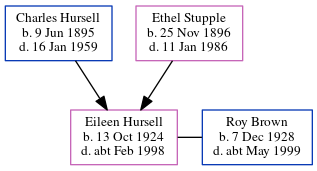

Roy Percival Brown 1928 - c1999
[ Home ] | [ Calendar ] | [ Surnames Index ] | [ Errors ] | [ Family History ]Roy Brown, the husband of Eileen Frances Hursell (the third cousin once-removed on the mother's side of Nigel Horne), was born on 7 Dec 19281,2. On 29 Sept 1939, he was living at 10 Queen Street, Ashford, Kent, England1.
He died c. May 1999 in Canterbury, Kent, England2.
Citations
- 1939 Register - Findmypast (was the son of the head of the household)
- England & Wales deaths 1837-2007 - Findmypast
Media
England & Wales deaths 1837-2007 - BMD/D/1999/4/82968693
1939 Register - TNA/R39/1681/1681H/002/17
Family Tree
Map
Generated by ged2site. Last updated on Jul 3, 2024
Known Issues
Date of birth is known, but not place